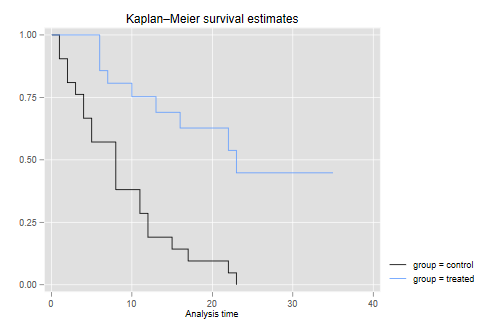
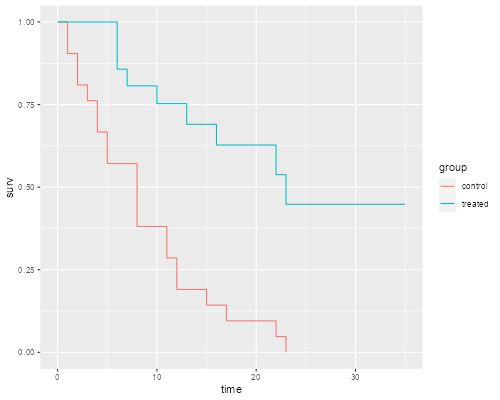

<h2 class="first" id="kaplanmeir">Kaplan-Meir Survival</h2>
<p>We’ll illustrate the Kaplan-Meier estimator with the classic dataset
used by Cox in his seminal paper on proportional hazard models. The data
shows the length of remission in weeks for two groups of leukemia
patients, treated and controls.</p>
<p>We start by reading the data, available in the datasets section as a
plain text file <code>gehan.dat</code> and a Stata file
<code>gehan.dta</code>.</p>

{% include srtabs.html %}

<pre class='stata'>. use    https://grodri.github.io/datasets/gehan, clear    
(Dataset used in Cox's 1972 paper, JRSS 34:187-220)

. stset weeks, failure(relapse) // define as survival data

Survival-time data settings

         Failure event: relapse!=0 &amp; relapse&lt;.
Observed time interval: (0, weeks]
     Exit on or before: failure

──────────────────────────────────────────────────────────────────────────
         42  total observations
          0  exclusions
──────────────────────────────────────────────────────────────────────────
         42  observations remaining, representing
         30  failures in single-record/single-failure data
        541  total analysis time at risk and under observation
                                                At risk from t =         0
                                     Earliest observed entry t =         0
                                          Last observed exit t =        35
</pre>
<pre class='r'>> library(survival)
> library(dplyr)
> library(ggplot2)
> gehan &lt;- read.table("https://grodri.github.io/datasets/gehan.dat")
> summarize(gehan, events = sum(relapse), exposure = sum(weeks))
  events exposure
1     30      541
</pre>
<p>As you can see, 30 of the 42 patients had a relapse, with a total
exposure time of 541 weeks. The weekly relapse rate is 7.8%.</p>
<p>Next we compute and plot the Kaplan-Meir estimator of the survival
function in each of the two groups.</p>
<pre class='stata'>. sts graph, by(group)

        Failure _d: relapse
  Analysis time _t: weeks

. graph export kmg.png, width(500) replace
file kmg.png saved as PNG format
</pre>
<p></p>
<pre class='r'>> kmg &lt;- survfit(Surv(weeks, relapse) ~ group, data=gehan)
> #plot(kmg)
> a = 1:kmg$strata[1]
> kmdf &lt;- data.frame(group = rep(c("control", "treated"), kmg$strata+1),
+   time = c(0, kmg$time[a], 0, kmg$time[-a]),
+   surv = c(1, kmg$surv[a], 1, kmg$surv[-a])) %>% group_by(group)
> ggplot(kmdf, aes(time, surv, color=group)) + geom_step()
> ggsave("kmgr.png", width=500/72, height=400/72, dpi=72)
</pre>
<p></p>
<p>The graph shows that after 23 weeks all patients in the control group
had relapsed, but about half those in the treated group remained in
remission. We can list the survival function.</p>
<pre class='stata'>. sts list, by(group)

        Failure _d: relapse
  Analysis time _t: weeks

Kaplan–Meier survivor function
By variable: group

             At           Net    Survivor      Std.
  Time     risk   Fail   lost    function     error     [95% conf. int.]
────────────────────────────────────────────────────────────────────────
control 
     1       21      2      0      0.9048    0.0641     0.6700    0.9753
     2       19      2      0      0.8095    0.0857     0.5689    0.9239
     3       17      1      0      0.7619    0.0929     0.5194    0.8933
     4       16      2      0      0.6667    0.1029     0.4254    0.8250
     5       14      2      0      0.5714    0.1080     0.3380    0.7492
     8       12      4      0      0.3810    0.1060     0.1831    0.5778
    11        8      2      0      0.2857    0.0986     0.1166    0.4818
    12        6      2      0      0.1905    0.0857     0.0595    0.3774
    15        4      1      0      0.1429    0.0764     0.0357    0.3212
    17        3      1      0      0.0952    0.0641     0.0163    0.2612
    22        2      1      0      0.0476    0.0465     0.0033    0.1970
    23        1      1      0      0.0000         .          .         .
treated 
     6       21      3      1      0.8571    0.0764     0.6197    0.9516
     7       17      1      0      0.8067    0.0869     0.5631    0.9228
     9       16      0      1      0.8067    0.0869     0.5631    0.9228
    10       15      1      1      0.7529    0.0963     0.5032    0.8894
    11       13      0      1      0.7529    0.0963     0.5032    0.8894
    13       12      1      0      0.6902    0.1068     0.4316    0.8491
    16       11      1      0      0.6275    0.1141     0.3675    0.8049
    17       10      0      1      0.6275    0.1141     0.3675    0.8049
    19        9      0      1      0.6275    0.1141     0.3675    0.8049
    20        8      0      1      0.6275    0.1141     0.3675    0.8049
    22        7      1      0      0.5378    0.1282     0.2678    0.7468
    23        6      1      0      0.4482    0.1346     0.1881    0.6801
    25        5      0      1      0.4482    0.1346     0.1881    0.6801
    32        4      0      2      0.4482    0.1346     0.1881    0.6801
    34        2      0      1      0.4482    0.1346     0.1881    0.6801
    35        1      0      1      0.4482    0.1346     0.1881    0.6801
────────────────────────────────────────────────────────────────────────
Note: Net lost equals the number lost minus the number who entered.
</pre>
<pre class='r'>> summary(kmg)
Call: survfit(formula = Surv(weeks, relapse) ~ group, data = gehan)

                group=control 
 time n.risk n.event survival std.err lower 95% CI upper 95% CI
    1     21       2   0.9048  0.0641      0.78754        1.000
    2     19       2   0.8095  0.0857      0.65785        0.996
    3     17       1   0.7619  0.0929      0.59988        0.968
    4     16       2   0.6667  0.1029      0.49268        0.902
    5     14       2   0.5714  0.1080      0.39455        0.828
    8     12       4   0.3810  0.1060      0.22085        0.657
   11      8       2   0.2857  0.0986      0.14529        0.562
   12      6       2   0.1905  0.0857      0.07887        0.460
   15      4       1   0.1429  0.0764      0.05011        0.407
   17      3       1   0.0952  0.0641      0.02549        0.356
   22      2       1   0.0476  0.0465      0.00703        0.322
   23      1       1   0.0000     NaN           NA           NA

                group=treated 
 time n.risk n.event survival std.err lower 95% CI upper 95% CI
    6     21       3    0.857  0.0764        0.720        1.000
    7     17       1    0.807  0.0869        0.653        0.996
   10     15       1    0.753  0.0963        0.586        0.968
   13     12       1    0.690  0.1068        0.510        0.935
   16     11       1    0.627  0.1141        0.439        0.896
   22      7       1    0.538  0.1282        0.337        0.858
   23      6       1    0.448  0.1346        0.249        0.807
</pre>
<p>The convention is to report the survival function immediately after
each time. In the control group there are no censored observations, and
the Kaplan-Meier estimate is simply the proportion alive after each
distinct failure time. You can also check that the standard error is the
usual binomial estimate. For example just after 8 weeks there are 8 out
of 21 alive, the proportion is 8/21 = 0.381 and the standard error is
v0.381(1 - 0.381)/21) = 0.106.</p>
<p>In the treated group 12 cases are censored and 9 relapse. Can you
compute the estimate by hand? The distinct times of death are 6, 7, 10,
13, 16, 22 and 23. The counts of relapses are 3, 1, 1, 1, 1, 1, 1. When
there are ties between event and censoring times it is customary to
assume that the event occurred first; that is, observations censored at
<em>t</em> are assumed to be exposed at that time, effectively censored
just after <em>t</em>. The counts of censored observations after each
death time (but before the next) are 1, 1, 2, 0, 3, 0 and 5. When the
last observation is censored the K-M estimate is greater than zero, and
is usually considered undefined after that.</p>
